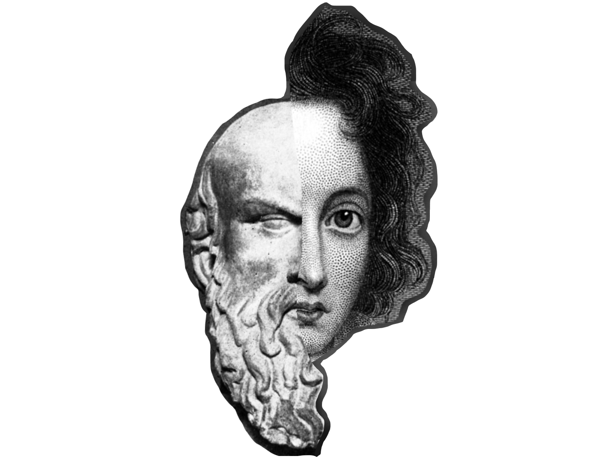

Un bony corona
els peus, un bony
del qual s’aprecien
nusos, mal fets
però efectius si s
’apilen; nusos que
haurien valgut per a
altres accions,
posats tots allà
fingidament,
suggerint moltes
coses alhora,
escampades copiosament
com la merda. Es
discuteix a l’Olimp
si aquests nusos
[acabaran
fent el que
busquen, però què
busquen? És evident!
Sí que ho faran!
Aquest bony, que
Prometeu toca,
palpa a consell dels
metges i d’Io,
i li molesta com
un lunar o banya
saltirona que tallaria
[d’arrel i/o
sotmetria a tracta_
ment de congelació
(Hm,
aquesta és una imatge
poc habitual perquè
no sotmet més del que
ja hi ha de sot_
mès). D’aquest bony
no és capaç de
[discernir
si és part del seu
cos (i el matarà) o
si és només
una força externa
(que el matarà). És
possible que la presó
més gran sigui aquí,
en el seu pensament,
en no saber quin Déu
el castiga ara.
No et facis mal a
les mans, demana
[Hermes.
«Per què fas servir la teva
única porció
lliure per escapar cap a_
les que no ho són?».
«Sempre va ser així»,
cantusseja el Cor.
I Zeus no sap,
o Zeus ho sap?
Se senten aspa_
vents d’upa,
i al capdavall
[derrota.
Prometeu, criatura
complexa, d’on
vens? S’acull a
la seva llibertat de no
respondre preguntes.
RESPON!
Vanitós f. d. p.,
que no ets menys
home de negocis
que nosaltres. És aquesta
la gran qüestió?
La que exposa
el saldo?
«D’on vinc?».
Ningú no va voler saber-ho.
Gaudies d’aquesta
[llibertat,
també. I ara
continues amb la teva porno_
grafia d’idees; ex_
poses aquí en aquesta
[muntanya
totes les teves llibertinades
(«Sempre va ser així»,
cantusseja el Cor) i
ara que mira!
serà així i es con_
juren anades i vingudes
per ser un, ara
vols la llibertat
per extirpar-te del
[món,
perquè no és part
de tu!
Metadades
Idoia Prim
├─ nom_arxiu_enviat = "dividit_enfollit.txt"
├─ bateria_dispositiu = 3%
├─ programa = "notepad++"
├─ estat_mental = "prometeun't"
├─ variables_entorn:
│ ├─ input_01 = "un és dos"
│ ├─ input_02 = "dos no és un"
│ └─ input_03 = "miracle a la plaça"
└─ paraules_esborrades:
├─ dump_01 = "no n'hi ha per tant"
└─ dump_02 = "segur que no"